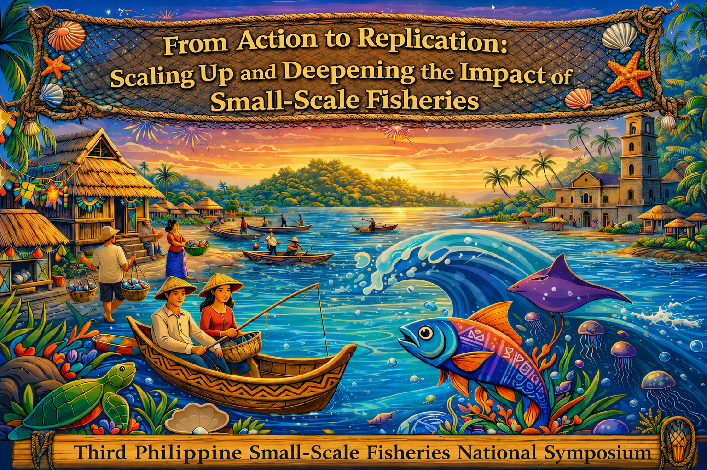

October 21-23, 2026
Batangas State University
The National Engineering University
Batangas City, Philippines
About the Conference
The Philippine Small-Scale Fisheries National Symposium is organized through a rotational hosting arrangement among forty-eight (48) state colleges and universities offering Fisheries programs. This approach promotes national collaboration and encourages wider regional participation in fisheries research, education, and policy dialogue.
The First Philippine Small-Scale Fisheries National Symposium, held on October 16–18, 2024, was hosted by the University of the Philippines Visayas, a leading institution in marine and fisheries research in the Philippines. The Second Philippine Small-Scale Fisheries National Symposium, held on October 21–23, 2025, was subsequently hosted by Mindanao State University in Marawi City, Mindanao, expanding the symposium’s reach and engagement with stakeholders from the southern Philippines.
These venues provided important platforms for bringing together researchers, policymakers, fisheries practitioners, and representatives of small-scale fishing communities to exchange knowledge, share research findings, and discuss strategies for strengthening the sustainability and governance of small-scale fisheries in the country.
Continuing this collaborative tradition, the Third Philippine Small-Scale Fisheries National Symposium will be hosted by Batangas State University in Batangas City, Luzon, on October 21–23, 2026, further strengthening nationwide participation and fostering continued dialogue among fisheries stakeholders and academic institutions.
The first two Philippines Small-Scale Fisheries National Symposia established a clear national consensus: that small-scale fisheries (SSF) are too vital to ignore, and that the country must move from recognition to sustained action. Across many coastal communities, community-based and co-management fisheries initiatives have already demonstrated measurable gains in resource recovery, local governance, gender inclusion, and livelihood diversification.
However, these successful models often remain localized, fragmented, and insufficiently documented, limiting their potential for wider replication and policy integration.
Anchored on the theme “From Action to Replication: Scaling Up and Deepening the Impact of Small-Scale Fisheries,” the Third Philippines Small-Scale Fisheries National Symposium seeks to advance the discourse from isolated success stories toward systematic scaling, adaptation, and institutionalization of proven practices.
The symposium is guided by a central question: How can effective small-scale fisheries initiatives be replicated and scaled to generate sustainable, inclusive, and long-term impact across Philippine coastal communities?
By convening stakeholders from government, academia, civil society, and fisher organizations, the symposium aims to catalyze evidence-based dialogue, strengthen cross-sector partnerships, and identify strategic pathways for translating local innovations into nationally relevant solutions that reinforce resilient coastal livelihoods and sustainable fisheries governance.
By hosting the 2026 Third PSSFNS, Batangas State University – The National Engineering University strengthens its leadership in sustainability, community-based research, and its longstanding engagement with small-scale fishing communities in the Philippines.
This initiative aligns with:
- Food and Agriculture Organization of the United Nations (FAO) Voluntary Guidelines for Securing Sustainable Small-Scale Fisheries
- TBTI’s Global Small-Scale Fisheries Research Agenda
- Sustainable Development Goals (SDGs) 1, 2, 5, 10, 13, 14, and 16
- Philippine Blue Economy and Climate Adaptation frameworks
Announcement

About Us

The NATIONAL CONSORTIUM FOR SMALL SCALE FISHERIES RESEARCH AND DEVELOPMENT OR TOO-BIG- TO-IGNORE (TBTI) PHILIPPINES is a research network and knowledge mobilization partnership that focuses on addressing issues and concerns affecting the viability and sustainability of small-scale fisheries (SSF) in the Philippines. TBTI Philippines envisions being the lead organization for policy inputs and advice on SSF matters in the country. Its mission is to promote the conduct of transdisciplinary SSF research and governance to promote the welfare of small-scale fishers. The goals are to: 1.) conduct transdisciplinary research on SSF in the country; 2.) promote transdisciplinary SSF research and governance in the country; 3.) conduct training and other capability-building activities in line with the promotion of SSF transdisciplinary research; 4.) create a repository of SSF data, research, and other information in the country; 5.) provide inputs to policies affecting SSF in the country; and 6.) promote the full implementation of Voluntary Guidelines for Securing Sustainable Small-Scale Fisheries (SSF Guidelines) in the country.
Batangas State University (BatStateU), officially designated as the Philippines’ National Engineering University by virtue of Republic Act No. 11694, stands as the country’s largest engineering institution with over 64,000 students across 12 campuses in CALABARZON. Boasting a 120-year legacy, this Level IV, ISO 9001:2015 certified state university is globally recognized for its academic excellence, holding prestigious ABET accreditations for its engineering, computer science, and information technology programs, alongside multiple CHED Centers of Excellence and Development. Beyond engineering, BatStateU serves as a vital economic and innovation hub, hosting the country's first PEZA-registered Knowledge, Innovation, and Science Technology (KIST) Park and various regional research centers. Strongly committed to the 2030 Global Goals, the university actively integrates environmental stewardship through its Center for Sustainable Development—earning it a spot as the 239th World's Most Sustainable University in the 2025 UI GreenMetric rankings—while simultaneously securing high marks in the 2025 WURI and THE Impact Rankings as a premier institution developing tomorrow's leaders for the global knowledge economy.
Too Big To Ignore (TBTI) Philippines – The National Consortium for Small-Scale Fisheries Research and Development.
Partner State Universities and Colleges (SUCs) – In active collaboration with leading regional state universities and consortium members dedicated to advancing small-scale fisheries research, community governance, and strategic academic development across the Philippines.